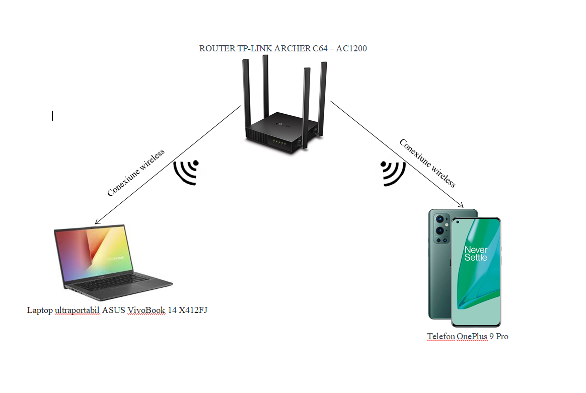
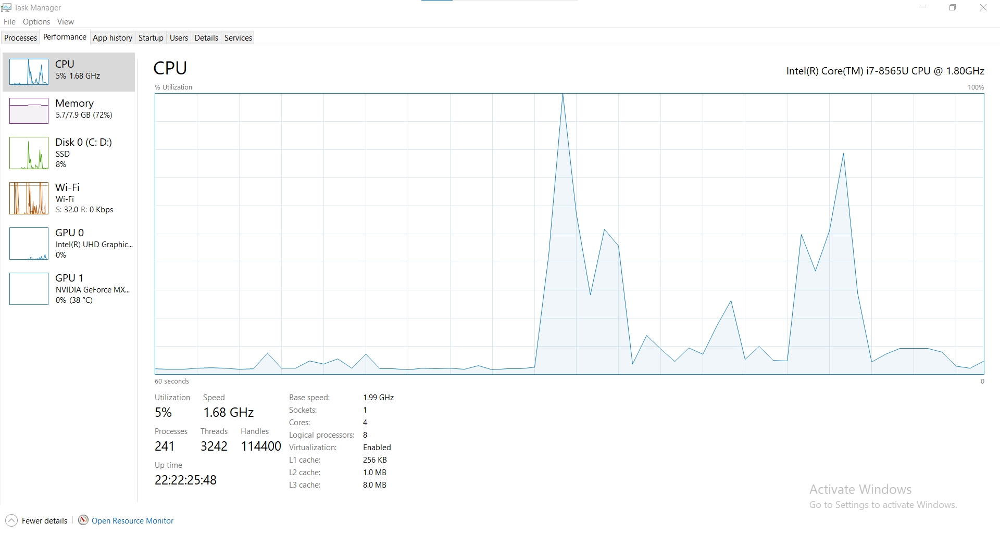
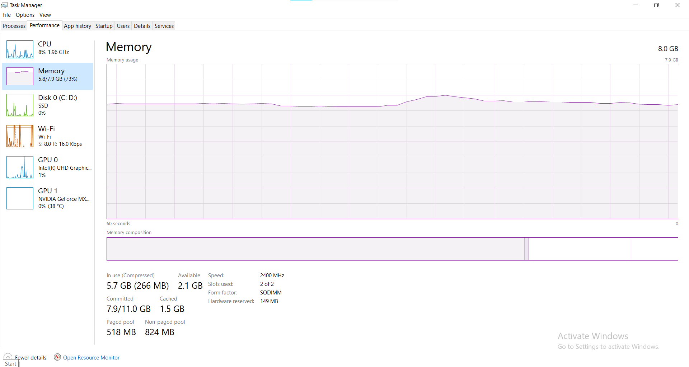
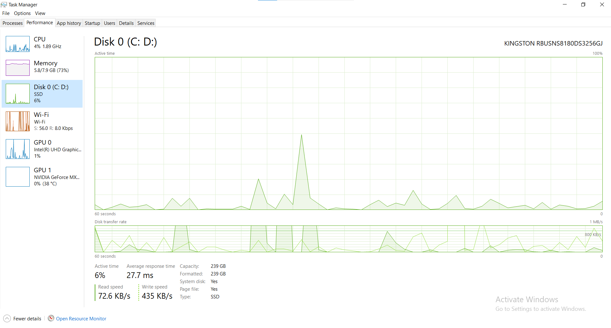
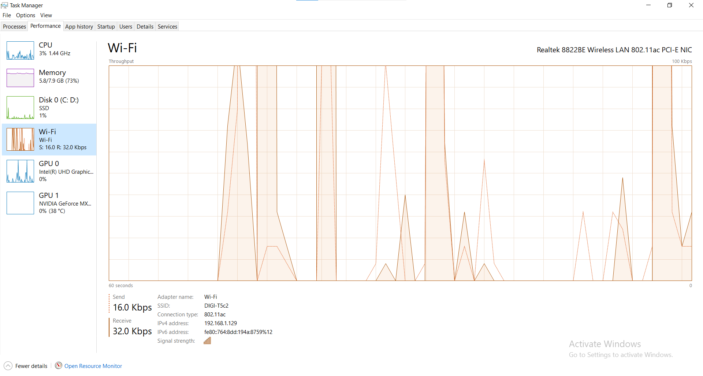
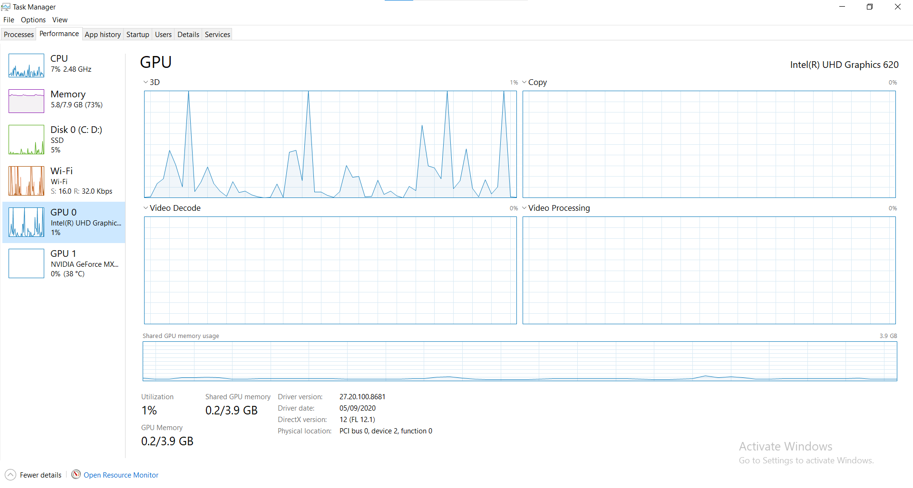
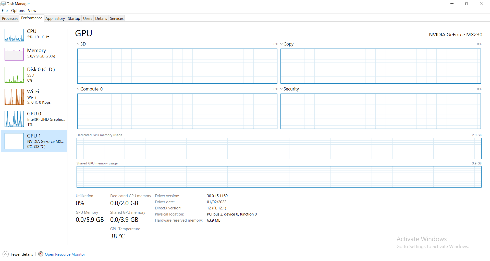
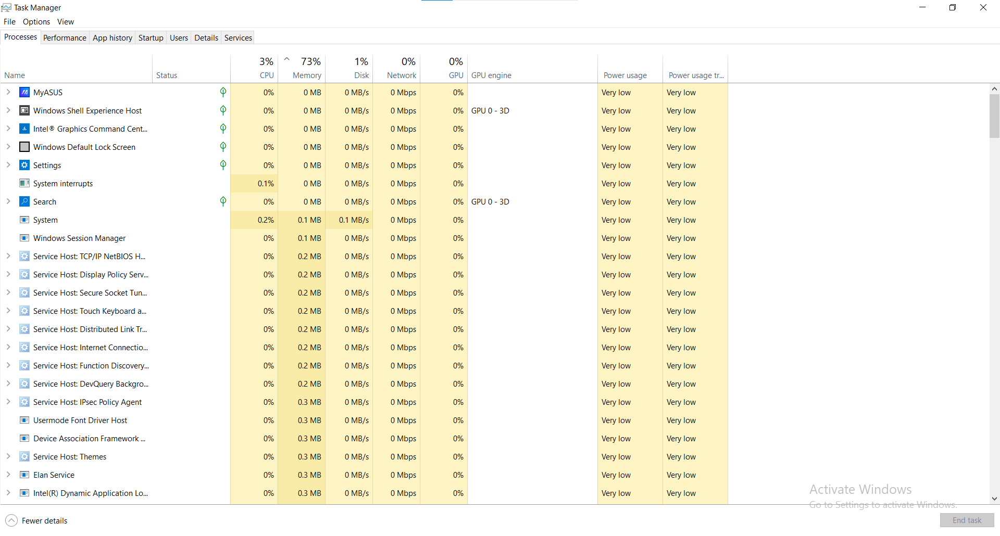
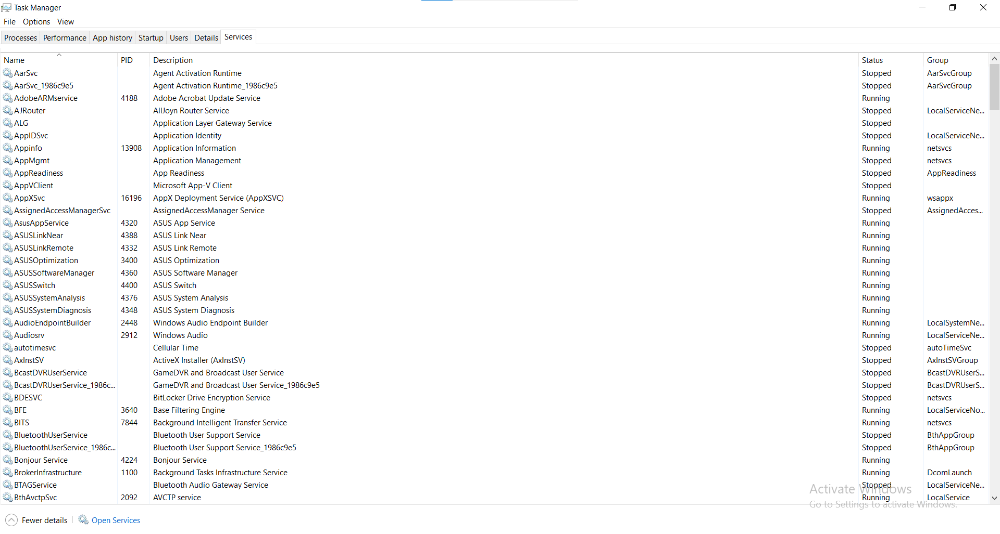

Brabete Alexandru-Gabriel
alexandrubrabete@yahoo.com
Componente si caracteristici:
Denumire
Producător
Parametri
Procesor
Intel
Serie procesor: Intel Core i7-8565U
Număr nuclee: 4
Frecvența nominală: 1.8 GHz
Frecvența Turbo Boost: 4.6 GHz
Cache: 8192 KB
Tehnologie procesor: 14 nm
Procesor grafic integrat: Intel UHD Graphics 620
Placa video (dedicată)
Nvidia
Chipset video: nVidia GeForce MX
Model placă video: MX230
Capacitate memorie video: 2048 MB
Tip memorie placă video: GDDR5
Tehnologii placă video DirectX 12, GeForce Experience
Memorie RAM
Asus
Capacitate memorie: 8 GB
Tip memorie: DDR4
Frecvență: 2400 MHz
Memorie integrată: 4096 MB
Memorie ROM
Kingstone
Tip stocare: SSD
Capacitate SSD: 256 GB
Interfață SSD: SATA 3
Structura rețelei:

Caracteristici conexiune rețea:
Viteză download: 586,60Mbps (conform
speedtest.net
)
Viteză upload: 549.80Mbps
Tip de conexiune: fără fir (wi-fi)
Echipament de rețea: Router TP-LINK ARCHER C64 – AC1200
Monitorizare resurse:
       